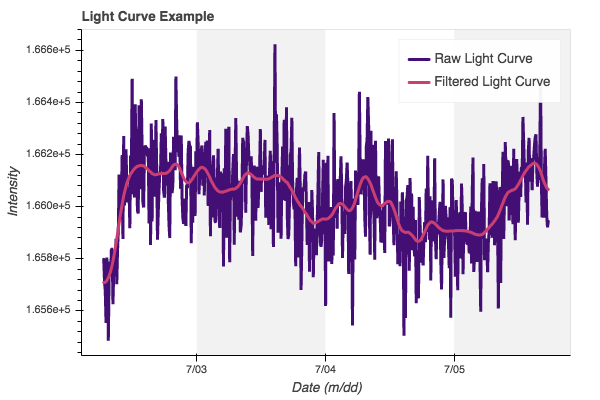
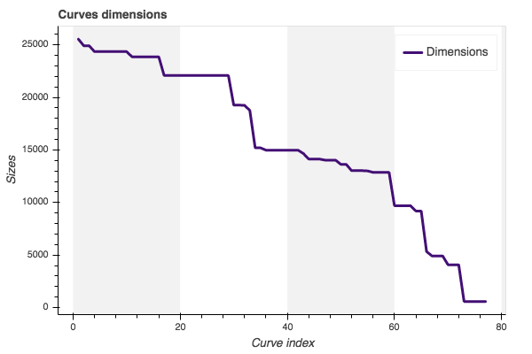
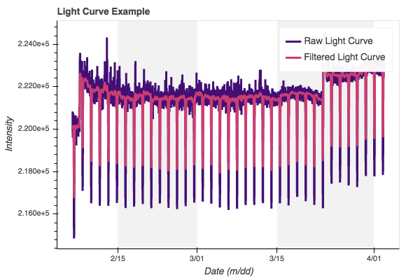
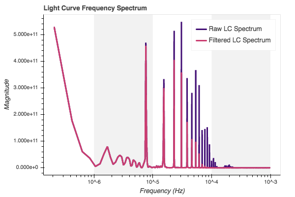
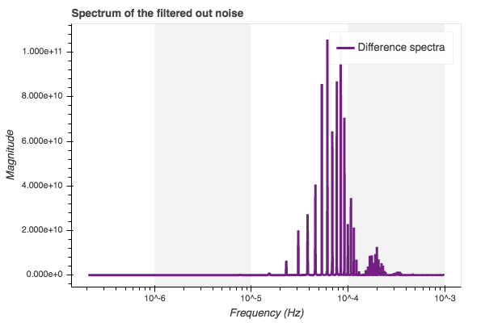
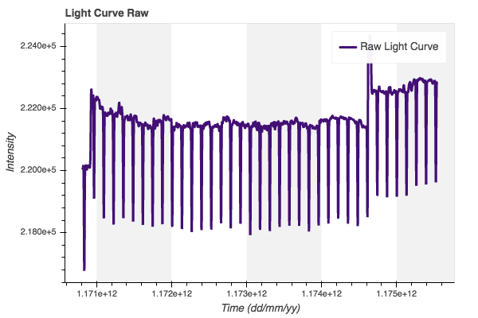
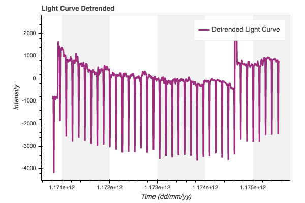
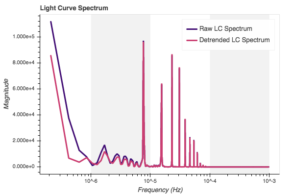
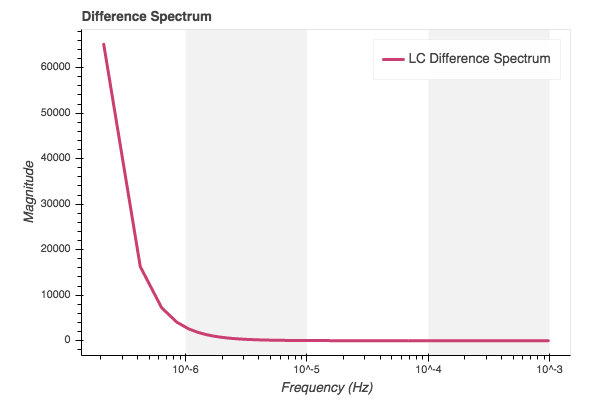
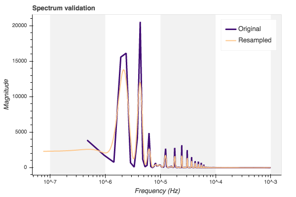

Reading the data¶
To go trough with this example, one might have or a
filtered.pkl - pickle format file
filtered.mat - matlab format file
as generated in the previous step of the pipeline. Note that, we are now ready to generate features for the machine learning algorithms. The biggest challenge is to get static features out of the time series (wich is a dynamic data). Here we will approach three main static feature generation paths:
Frequency analysis with periodograms
Naive Bayes likelihood parameters
Markov transition probability matrix
All of these three features will be further used as static data for the machine learning algorithms to learn how to classify the light curves as each class. So first, it is necessary to read the preprocessed/filtered data from the last pipeline step:
Note that we must have the data preprocessed and labeled as exo-planets and not exo-planets. If the user does not have this file already, it just need to run follow trough the last pipeline step procedures, or one can download one version of the preprocessed data from: - Google drive access
[1]:
import pickle
file_path = './filtered.pkl'
with open(file_path, 'rb') as f:
curves = pickle.load(f)
After, lets import the utils package with the support algorithms…
[2]:
from utils import *
Just plot an example time series to get a notion on the data obtained from the pickle (.pkl) file generated from the previous study script, and for that the utils library will be imported to take advantage of its visual functionality:
[3]:
from utils import *
from datetime import datetime
from datetime import timedelta
index = 8
time_in_days = [curves['i'][index]
+ timedelta(minutes=time) for time in curves['t'][index]]
x_data = [time_in_days, time_in_days]
y_data = [curves['r'][index], curves['y'][index]]
legends= ['Raw Light Curve', 'Filtered Light Curve']
colors = [2, 5]
p = visual.multline_plot(x_data, y_data,
legend_label=legends,
title='Light Curve Example',
color_index=colors,
y_axis={'label': 'Intensity'},
x_axis={'label': 'Date (m/dd)',
'type': 'datetime'})
visual.show_plot(p)

Just for ilustration… lets see how much samples we have in each curve. This gives the notion on how much data there is in each curve. From that it is possible to realise how much time the next algorithms will take to generate the necessary information.
[4]:
sizes = [len(curve) for curve in curves['y']]
x_values = [k+1 for k in range(len(sizes))]
sizes.sort(reverse=True)
p = visual.line_plot(x_values, sizes,
legend_label='Dimensions',
title='Curves dimensions',
color_index=2,
y_axis={'label': 'Sizes'},
x_axis={'label': 'Curve index'})
visual.show_plot(p)

Compute some important constants that will be used during the analysis, such as mean sample time and sample frequency.
[5]:
sample_time = curves['t'][0][1] - curves['t'][0][0] # minutes
sample_freq = 1 / (60 * sample_time) # hertz
print("The series have a time sample of {} minutes, consequently a sample frequency of {} Hz".format(round(sample_time,2), round(sample_freq,6)))
The series have a time sample of 8.56 minutes, consequently a sample frequency of 0.001946 Hz
Feature: Frequency response¶
Introduction¶
One must know that theorically the most characteristic representation of a particular signal, would be its Fourier spectrum. If the real life signals were actually simple, it would be pretty simple to characterize those signals by their frequency spectrum. But unfortunately the real world signals are actully filled with noise from several natures.
So, if you want to get the most informative static information of a dynamic signal, it would be the power spectrum of this signal in the frequency domain without the undesired noise. In this chapter, it is developed an algorithm that attempt to find this representation for each light curve and adapt this information to be further used as features for machine learning algorithms.
Select one curve to create the frequency analysis, let’s say the curve indexed as index = 5. We use that curve as an example to create the routine to create time-series power spectrum feature for the machine learning algorithms. Later, a generation algorithm will be presented, which will properly reproduce this process for all handle light curves. For that matter, we first present the curve:
[6]:
index = 5
time_in_days = [curves['i'][index]
+ timedelta(minutes=time) for time in curves['t'][index]]
x_data = [time_in_days, time_in_days]
y_data = [curves['r'][index], curves['y'][index]]
legends= ['Raw Light Curve', 'Filtered Light Curve']
colors = [2, 5]
p = visual.multline_plot(x_data, y_data,
legend_label=legends,
title='Light Curve Example',
color_index=colors,
y_axis={'label': 'Intensity'},
x_axis={'label': 'Date (m/dd)',
'type': 'datetime'})
visual.show_plot(p)

Spectrum generation¶
Then we can use the signal library from scipy to create the Periodogram or also called as the Spectrogram of this time series. We will create both the frequency information for the filtered signal, and the original data saved from the last analysis, just to highlight the information removed with the filtering technique.
From here, one might see that the filtering technique applied on the last analysis, only remove high frequency compenents from the data. We don’t know yep if the removed information is important or not for future analysis with machine learning, therefore, both frequency responses will be saved as feature for further analysis.
[7]:
import scipy.signal as ssg
freq, spectra = ssg.periodogram(curves['r'][index],
fs=sample_freq, scaling='density')
ffreq, fspectra = ssg.periodogram(curves['y'][index],
fs=sample_freq, scaling='density')
efreq, espectra = ssg.periodogram(curves['y'][index]-curves['r'][index],
fs=sample_freq, scaling='density')
x_data = [freq, ffreq]
y_data = [spectra, fspectra]
legends= ['Raw LC Spectrum', 'Filtered LC Spectrum']
colors = [2, 5]
p = visual.multline_plot(x_data, y_data,
legend_label=legends,
title='Light Curve Frequency Spectrum',
color_index=colors,
y_axis={'label': 'Magnitude'},
x_axis={'label': 'Frequency (Hz)',
'type': 'log'})
p1 = visual.line_plot(efreq, espectra,
legend_label='Difference spectra',
title='Spectrum of the filtered out noise',
color_index=3,
y_axis={'label': 'Magnitude'},
x_axis={'label': 'Frequency (Hz)',
'type': 'log'})
visual.show_plot(p, p1)
 
Detrended spectrum¶
But before generating the proposed feature for the machine learning, we must first present another possible process of the signal that might be relevant for further analysis. The DC level of the signal, usually represents the \(0\) Hz component of the frequency spectrum, and does not provide any dynamic meaningful information of the data. Therefore, it is common sence to first remove the so called trend that composes the DC level of the signal. This process is also called detrending of the
signal. And it is pretty simple to be applied using the signal library from scipy.
[8]:
import scipy.signal as ssg
detrended_data = ssg.detrend(curves['y'][index], type='linear')
time_in_days = [curves['i'][index]
+ timedelta(minutes=time) for time in curves['t'][index]]
p = visual.line_plot(time_in_days, curves['y'][index],
legend_label='Raw Light Curve',
title='Light Curve Raw',
color_index=2,
y_axis={'label': 'Intensity'},
x_axis={'label': 'Time (dd/mm/yy)'})
p1 = visual.line_plot(time_in_days, detrended_data,
legend_label='Detrended Light Curve',
title='Light Curve Detrended',
color_index=4,
y_axis={'label': 'Intensity'},
x_axis={'label': 'Time (dd/mm/yy)'})
visual.show_plot(p, p1)
 
The influence on the periodogram can be shown by just generating once more the periodogram of the detrended signal and the previous one, with DC level influence.
[9]:
freq, spectra = ssg.periodogram(curves['y'][index], fs=sample_freq, scaling='spectrum')
ffreq, fspectra = ssg.periodogram(detrended_data, fs=sample_freq, scaling='spectrum')
efreq, espectra = ssg.periodogram(detrended_data-curves['y'][index], fs=sample_freq, scaling='spectrum')
x_data = [freq, ffreq]
y_data = [spectra, fspectra]
legends= ['Raw LC Spectrum', 'Detrended LC Spectrum']
colors = [2, 5]
p = visual.multline_plot(x_data, y_data,
legend_label=legends,
title='Light Curve Spectrum',
color_index=[2, 5],
y_axis={'label': 'Magnitude'},
x_axis={'label': 'Frequency (Hz)',
'type': 'log'})
p1 = visual.line_plot(efreq, espectra,
legend_label='LC Difference Spectrum',
title='Difference Spectrum',
color_index=5,
y_axis={'label': 'Magnitude'},
x_axis={'label': 'Frequency (Hz)',
'type': 'log'})
visual.show_plot(p, p1)
 
Interesting enough, this is the spectrum of the time series analysed (index=5). Of course we will detect several highly evidenced frequency components, because the time series is clearly periodic. That is the most informative data that we could get from this time series using signal and dynamic systems theory.
One might see that the information removed by using the detrend technique only removes low frequency information in a smooth way. It is necessary to be carreful when using filtering tehcniques, so that no nonlinear and aggressive techniques are applied to the data. Those aggressive techniques are usually not practical and might result on unreal phenomenon on the data.
Resample spectrum¶
One might notice that the spectrogram will not have the same resolution for each feature… This is the biggest problem on computing the time series power spectrum: the dimension inconsitency produced by the computation techniques to craft the power spectrum. Usually those algorithms rely on time series windows (remember the convolution process) to estimate the parameters of the Fourier representation of the series. Each time series has a particular number of samples and windows sizes with their sweep space, and those controls the build power spectrum resolution. Because of this, each light curve will have a particular power spectrum resolution.
It is therefore, necessary to create an algorithm able to reshape or resample those power spectrum to an unique resolution. This is necessary because most machine learning algorithms only deal with constant feature dimensions. To achieve this goal, it is introduced the resample_freq_data function.
[10]:
import scipy.signal as ssg
from PyAstronomy import pyasl
def resample_freq_data(data=None,
upper_sample=True,
window=13,
algorithm='hamming'):
output_data = list()
# Get the maximun and minimun frequencies, and
# the resolution of each feature
fmax, fmin, size = [], [], []
for feat in data['freq']:
fmax.append(feat.max())
fmin.append(feat.min())
size.append(len(feat))
# Compute the high and low resolution step for
# the resampling
high_step = (max(fmax) - min(fmin)) / max(size) # high resolution
low_step = (max(fmax) - min(fmin)) / min(size) # low resolution
# Define the cutoff frequency to limit the
# spectrum data set, adn compute the new
# signal resolution based on the steps
up_cut_freq = min(fmax)
down_cut_frea = max(fmin)
high_resolution = up_cut_freq / high_step
low_resolution = up_cut_freq / low_step
# Compute the resample of each feature
compact = zip(data['spec'], data['freq'])
for spec, freq in compact:
# Find the closest index to the cut
# off freq, to remove the information
uspec, ufreq = spec, freq
if max(freq) > up_cut_freq:
freq_diff = [abs(f - up_cut_freq) for f in freq]
cut_index = freq_diff.index(min(freq_diff))
uspec = spec[:cut_index+1]
# Compute the resampled signal for
# high or low resolution
if upper_sample:
sig_size = round(high_resolution)
else:
sig_size = round(low_resolution)
# Resample the spectrum
uspec = ssg.resample(uspec, int(sig_size))
# Smooth the resampled spectrum
uspec = pyasl.smooth(uspec, window, algorithm)
# Save the info into the output signal
output_data.append( uspec[:-10] )
return output_data
Generation algorithm¶
Lets run all the preprocessing for all the light curve time series, and build the feature variable to be saved for the machine learning step of the pipeline:
[11]:
detrend = True
filtered = True
# Detrend and filter all light curve
# time series data
size = len(curves['r'])
aux_data = {
'freq': [],
'spec': []
}
for item in range(size):
# If we want a filtered data
if filtered:
data = curves['y'][item]
else:
data = curves['r'][item]
# If we want a detrended data
if detrend:
data = ssg.detrend(data, type='linear')
# Create the periodogram
freq, spec = ssg.periodogram(data, fs=sample_freq, scaling='spectrum')
# Save on the current variable
aux_data['freq'].append( freq )
aux_data['spec'].append( spec )
# Build the machine learning data
# structure to be saved on pickle file
ml_data = {
'features': {
'spec': resample_freq_data(aux_data,window=23)
},
'labels': curves['lab']
}
Just to guarantee the quality of the resampled variables, lets just plot the resampled one and the original spectrums
[12]:
import numpy as np
index_plot = 15
# Resample the frequency data
resolution = len(ml_data['features']['spec'][index_plot])
init = aux_data['freq'][index_plot][0]
final = aux_data['freq'][index_plot][-1]
rfreq = np.linspace(init, final, resolution)
# Create the plot data
x_data = [aux_data['freq'][index_plot], rfreq]
y_data = [aux_data['spec'][index_plot], ml_data['features']['spec'][index_plot]]
legends, colors, lw = ['Original', 'Resampled'], [2, 8], [3, 2]
p = visual.multline_plot(x_data, y_data,
legend_label=legends,
title='Spectrum validation',
color_index=colors,
line_width=lw,
y_axis={'label': 'Magnitude'},
x_axis={'label': 'Frequency (Hz)',
'type': 'log'})
visual.show_plot(p)

Save feature¶
Here we will modify the feature in a way to be ready for machine learning algorithm take this information as features and labels.
[ ]:
file_name = './features/freq_data/freq_data.pkl'
output = open(file_name, 'wb')
pickle.dump(ml_data, output)
output.close()
Feature: Naive Bayes likelihood¶
To create the Naive Bayes marginal likelihood approach, we just will try to use the bayesian theory for optimal filtering. The main structure here used will be the Bayes Ridge Regression, from the sklearn library. The main idea is to create a regression based model for each curve, and use the estimated parameters of each model as feature for machine learning classification. The regression model can be represented as
In the ridge regression, is assumed the prior value for the cofficient \(\omega\) to be given by a spherical Gaussian, leading the regression problem to be mapped as
The model estimation is just a matter of finding the set of \(\omega\), that minimizes the \(\mathcal{l}_2\) norm for a provided user defined parameter \(\lambda\). The \(\omega\) values are the most characteristic information of each light curve. Thence, here we use those values as features to train the classifier to cluster the light curve classes.
There are some discussions that one might include for this approach. One might ask:
What question should the bayes alorithm answer?
It will be just a regression model pro predict the next step?
It will be a regression model to predict model tendencies?
The best answer for that will appear when one uses the features provided from each path taken to try to classify the model. We cannot say before hand what feature will be best or not… Therefore, we must create some fetaure and then use their information to try to cluster the curve data.
Regression model¶
In both approaches is necessary to create a regression model, with chosen order \(n_x\). To do that, one can use a function such as this:
[13]:
def build_regressor(data=None, order=6, norm=True):
nx = order
outputs = []
regressors = []
for curve in data:
phi, y = [], []
size = len(curve)
# Normalize the curve data
serie = curve
if norm:
serie = (curve - min(curve)) / (max(curve) - min(curve))
# Build the regressor model
for k in range(size-nx):
phi.append(serie[k:k+nx])
y.append(serie[k+nx])
# Save the build regressors
regressors.append(phi)
outputs.append(y)
return regressors, outputs
Next step parameters¶
Here we will create the regression problem for each light curve, and estimate the respective rigde bayes parameters. For that the linear_model library from sklearn will be used, specific the BayesianRidge object. To both create the regressor, for each light curve and then train the model, one must do the following
Usually it is interesting to normalize the data before fitting a regression model.
[14]:
from sklearn import linear_model
bayes_data = {
'features': {
'params': []
},
'labels': curves['lab']
}
# Build the regression model
regr, out = build_regressor(curves['y'], order=20, norm=False)
# Estimate the bayes regression model
# for each set of regressor and outputs
for phi, y in zip(regr, out):
# Create the model
clf = linear_model.BayesianRidge()
# Estimate the model
clf.fit( phi, y )
# Save the parameters
bayes_data['features']['params'].append( clf.coef_ )
Save feature¶
Here we just save the feature variable in a particular pickle file
[ ]:
file_name = './features/bayes_data/nx_6/bayes_data.pkl'
output = open(file_name, 'wb')
pickle.dump(bayes_data, output)
output.close()
Feature: Markov Hidden Models¶
Here we will develop a time series prediction algorithm using the so called Hidden Markov Models. They are not much more than a state space model without the input signal… a model that freely vary provided an initial condition. The model can be simply mapped as
where our job is to determine the parameter matrix \(A\). Note that \(x(k)\) has dimension \(n_x\) wich is the model complexity, and user provided.
Here we actully will use a the library called
`hmmlearn<https://hmmlearn.readthedocs.io/en/latest/tutorial.html>`__ to estimate the model.
One might wonder the reason to estimate this prediction model. The idea is simple, the matrix \(A\) will caracterize the main behavior of the dynamic system, and then it is possible this summarized information of the time series (the \(A\) matrix) as feature for the classification machine learning algorithm further used.
Preprocessing data¶
But for that to work, we need to maintain the parameters of each estimated \(A\) matrix as close as possible to each other. This means that we first need to preprocess the data in a manner to maintain the same signal power within each curve. This can be done by detrending the time series, and then normalizing their values.
To detrend the data we will use the same library previouly used above from scipy.signal.
[15]:
import scipy.signal as ssg
# Create the feature data to be
# further saved for machine learning
hmm_data = {
'y': [],
't': curves['t'],
'labels': curves['lab'],
'features': {
'prob_matrix': []
}
}
# Flags for the pipeline
norm = False
# Pre processing pipe line
for curve in curves['y']:
# Detrend time series
series = ssg.detrend(curve, type='linear')
# Normalize (0, 1) time series
if norm:
mins, maxs = min(series), max(series)
series = (series - mins) / (maxs - mins)
# Add time series to processing data
hmm_data['y'].append( series )
Estimate HMM¶
Now we can just use the algorithm created to determine the Hidden Markov Model for each curve time series. For each curve, we can fetch the parameter called transmat_ which is actually the transition probability matrix of the state space model, here known as \(A\). From that we will have a \(A\) matrix for each curve… with model complexity equal to \(n_x=\) n_components, therefore making \(A \in \Re_{(n_x, n_x)}\).
[16]:
import numpy as np
from hmmlearn import hmm
# Model parameters
cfgs = {
'n_components': 8,
'covariance_type': 'full',
'n_iter': 100
}
# Compute each probability matrix
for curve_data in hmm_data['y']:
# Create the hmm model
remodel = hmm.GaussianHMM(**cfgs)
# Fit the hmm model to data
remodel.fit(np.array(
curve_data).reshape(len(curve_data),1))
# Recover the probability matrix
hmm_data['features']['prob_matrix'].append( remodel.transmat_ )
Save feature¶
Here we just save the feature variable in a particular pickle file
[ ]:
file_name = './features/hmm_data/nx_8/hmm_data.pkl'
output = open(file_name, 'wb')
pickle.dump(hmm_data, output)
output.close()
Download features¶
If the user does not want to run this pipeline step algorithm (since it takes time) one can just try to download the features, in several different setups from the Google Drive:
In this drive the user will find a repository called features, that will have this structure:
./features
│
├── bayes_data
│ ├── nx_4
│ │ ├── bayes_data.pkl
│ │ └── norm_bayes_data.pkl
│ ├── nx_6
│ │ ├── bayes_data.pkl
│ │ └── norm_bayes_data.pkl
│ ⋮ ⋮
│ └── nx_20
│ ├── bayes_data.pkl
│ └── norm_bayes_data.pkl
│
├── freq_data
│ │
│ └── freq_data.pkl
│
└── hmm_data
├── nx_4
│ ├── hmm_data.pkl
│ └── norm_hmm_data.pkl
├── nx_6
│ ├── hmm_data.pkl
│ └── norm_hmm_data.pkl
⋮ ⋮
└── nx_20
├── hmm_data.pkl
└── norm_hmm_data.pkl
Here the frequency spectrum approach only has one feature type to be used. But the Hidden Markov Model and the Naive Bayes likelihood has several one, provided the combination of the parameters \(n_x\) and the possibility to normalize or not the light curve time series. Thence, if the user want the parameters for the model with \(n_x=8\), for the case considering the normalized data, it will be found at /features/hmm_data/nx_8/norm_hmm_data.pkl for the hidden markov model approach,
and /features/bayes_data/nx_8/norm_bayes_data.pkl for the naive bayes.